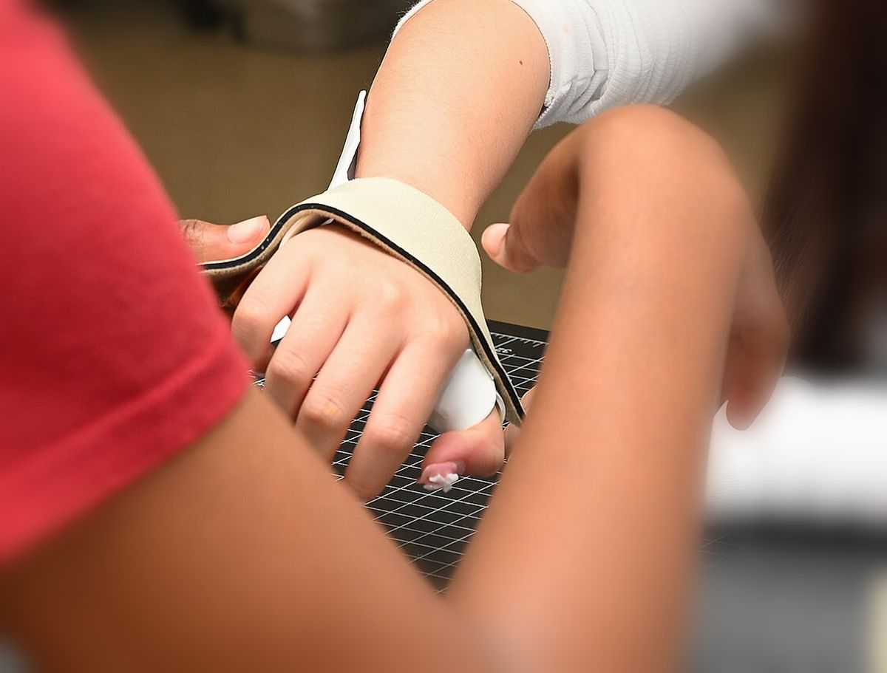
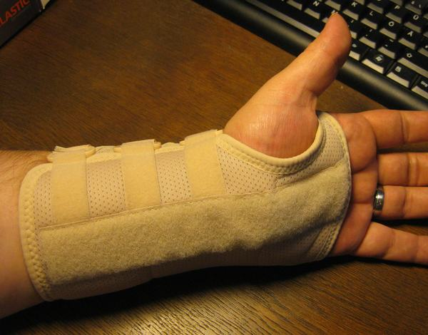

Orthèses de pouce et de poignet sur mesure
Rhizarthrose, suites de fracture ou d’entorse, tendinite, canal carpien : une orthèse thermoformée directement sur votre main, au cabinet, pour soulager et protéger sans entraver les gestes utiles.

- Moulée sur votre mainLe matériau est formé directement sur vous, au cabinet.
- De repos ou de fonctionPour la nuit, ou pour garder vos gestes dans la journée.
- AjustableLe thermoplastique se retouche à la chaleur si besoin.
- Sur prescriptionPour une prise en charge partielle par l’Assurance Maladie.
Les indications les plus fréquentes
Rhizarthrose
L’arthrose de la base du pouce rend douloureux les gestes de pince : ouvrir un bocal, tourner une clé, écrire. Une orthèse de repos la nuit, ou de fonction le jour, soulage l’articulation.
Canal carpien
Fourmillements dans les doigts, surtout la nuit : une orthèse de repos maintient le poignet en position neutre pendant le sommeil.
Tendinites
Tendinite du poignet ou du bord du poignet côté pouce (De Quervain) : l’orthèse met les tendons au repos le temps qu’ils récupèrent.
Après une fracture ou une entorse
Pour immobiliser ou protéger pendant la consolidation, puis accompagner la reprise, en lien avec le chirurgien et le kinésithérapeute.
Doigt blessé
Entorse, fracture, doigt « en maillet » qui ne s’étend plus : une petite orthèse sur mesure maintient le doigt dans la bonne position.
Post-opératoire
Sur prescription du chirurgien, une orthèse adaptée à la position et à la durée demandées.
Le thermoformage, au cabinet
L’entretien
Votre ordonnance, vos douleurs, vos gestes du quotidien et votre activité : c’est ce qui détermine la forme et la position de l’orthèse.
Le moulage sur la main
Une plaque de plastique thermoformable est chauffée jusqu’à devenir souple, puis modelée directement sur votre main. Elle durcit en refroidissant, en quelques minutes.
Les finitions
Bords adoucis, sangles, points d’appui vérifiés : l’orthèse doit tenir sans blesser.
Le port & le suivi
Quand la porter, combien de temps, comment l’entretenir. Si elle gêne, elle se retouche : le matériau se remodèle à la chaleur.

Ce qui change avec le sur mesure
Une attelle du commerce existe en quelques tailles et maintient de façon approximative. Elle dépanne, mais elle tient rarement parfaitement, surtout la nuit ou sur une main fine.
- La forme : l’orthèse sur mesure épouse votre main, sans point de pression.
- La position : l’angle du poignet ou du pouce est choisi selon l’indication et la prescription.
- Le confort : elle laisse libres les doigts et les gestes qui n’ont pas besoin d’être bloqués.
- Le suivi : elle se retouche si votre main change ou si la gêne évolue.
Combien coûte une orthèse sur mesure ?
Le tarif est fixe selon le type d’orthèse ; il vous est communiqué au cabinet ou par téléphone avant la fabrication.
Sur prescription médicale, une prise en charge partielle par l’Assurance Maladie et votre mutuelle est possible. Règlement par carte bancaire ou en espèces ; la carte Vitale n’est pas acceptée au cabinet.
Orthèses de la main : vos questions
Faut-il une ordonnance ?
Une prescription médicale est nécessaire pour une prise en charge par l’Assurance Maladie. Elle précise le type d’orthèse et l’indication ; apportez-la au rendez-vous.
Combien de temps faut-il pour la fabriquer ?
L’orthèse est moulée et ajustée au cabinet. Le délai dépend du type d’orthèse : il vous est précisé à la prise de rendez-vous.
Combien de temps faut-il la porter ?
Cela dépend de l’indication et de la prescription : la nuit seulement pour une rhizarthrose ou un canal carpien, en continu après une fracture, par exemple. Les consignes vous sont expliquées à la remise de l’orthèse.
Que faire si l’orthèse me gêne ?
Revenez au cabinet : le matériau thermoformable se remodèle à la chaleur, une zone qui appuie peut être retouchée.
Une orthèse faite pour votre main
30-32 rue Broca, 75005 Paris — métro Censier-Daubenton. Pensez à apporter votre ordonnance.